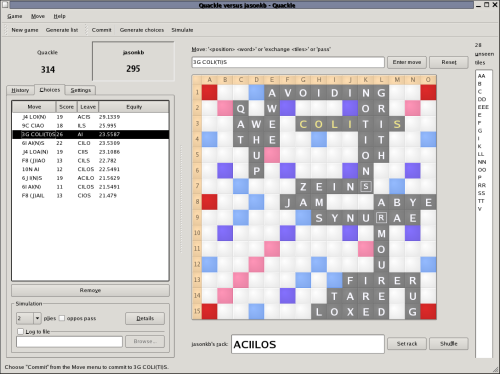

DATELINE 6 MARCH 2006
FOR IMMEDIATE RELEASE
6 March 2006 - THE INTERNET - Jason Katz-Brown and John O'Laughlin are excited to announce today the public release of Quackle (www.quackle.org), a crossword game artificial intelligence and analysis tool that rivals the best players in the world. It can be configured to play with different board configurations and use the newest lexicons. Quackle includes a move generator, move evaluator, simulator, and Qt-based user interface and can be used with any board layout, alphabet, lexicon, and tile distribution. It is licensed under the open-source revised BSD license.

(Click image to enlarge, or view more screenshots)
To further our knowledge of the mathematics and strategy behind crossword games, we need versatile tools for replaying games and analyzing positions. Quackle provides powerful tools in an easy-to-use interface no crossword game program has ever matched. Quackle simulations can be run for any number of plies and report on the average turn scores and standard deviation for each ply separately. Sims can also be paused and adjusted on the fly. "Using Quackle's flexible postmortem analysis and fine-grained simulation capabilities will make everyone a stronger crossword game player, and change the way you evaluate positions over the board," says coauthor Jason Katz-Brown.
The ability to adapt to any lexicon and board layout makes Quackle a truly global tool. An Italian-language lexicon is included in this beta release as a proof of concept. Users can also switch between SOWPODS, TWL06, and TWL98 lexicons at any time.
If you want to be alerted of future Quackle announcements or join in Quackle's development, please join the "quackle" Yahoo! group.
Quackle 0.9's implemented features:
Please contact Quackle's authors Jason Katz-Brown (jasonkb at mit dot edu) and John O'Laughlin (olaughlin at gmail dot com) with inquiries. Jason is ranked 14th and John 45th in North America in a popular crossword game. Jason is the author of Kolf and Kiten distributed with KDE. John is a coauthor of Landau, the crossword game program Quackle supersedes. Jason and John have previously collaborated on the open-source lexicon study tool Letterbox and the Anagrams game playing IRC bot anabot.
The authors would like to express great thanks to an anonymous donor who allowed the open-sourcing of this project and John Fultz for Microsoft Windows building help.
{kind=link}